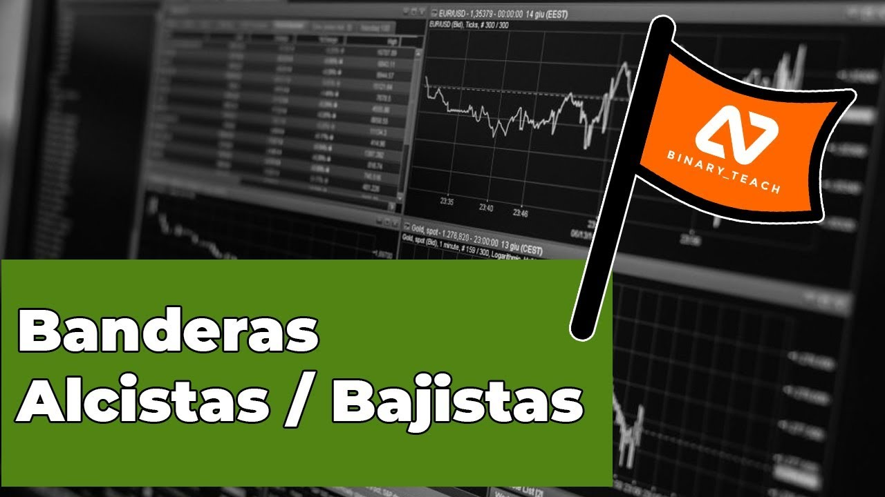

Banderas Alcistas y Bajistas
Continuamos con las figuras chartistas, esta figura pertenece a la clasificación de figuras o patrones chartistas de continuidad.
Este es un patrón bastante sencillo de reconocer, tiene mucha similitud a un canal bajista / alcista, pero a diferencia de estos las banderas suelen ser patrones mucho más pequeños.
Dentro de las caracteristicas que representan a las banderas podemos mencionar:
- La bandera se forma con una ligera inclinación en sentido contrario a la tendencia.
- La bandera esta formada por dos partes, mástil o asta y la bandera.
- El mástil es la tendencia previa a que aparezca la bandera.
- La bandera es la parte donde el precio descansa, con una ligera inclinación al sentido contrario de la tendencia.
- Para delimitar la bandera es necesario que el precio toque dos veces la parte superior y dos veces la parte inferior de los soportes y resistencias formados.
- El nivelo objetivo, tras la ruptura de los soportes y resistencias, el precio buscará llegar a un siguiente nivel, este nivel tiene la misma distancia que el mástil.
Bueno, se que a simple vista todas estas características parecen muy confusas, pero en el siguiente vídeo explico a detalle cómo identificar las figuras y cómo podemos operarlas. También te muestro unos ejemplos.

El conocimiento de estos patrones no es indispensable para nuestro trading. Pero cómo siempre, tener éste conocimiento nos permite aprovechar más oportunidades en el mercado.
Recuerda que todos estos conceptos son aplicables tanto para Opciones Binarias, cómo para Forex, Futuros, Criptomendas.